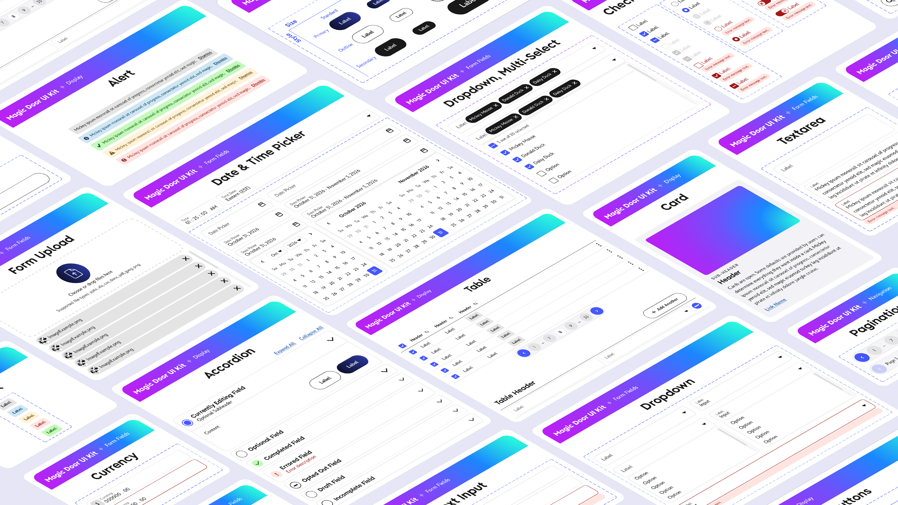

A React-based design system and developer enablement ecosystem that transformed Disney Enterprise Technologys approach to UX, product quality, and internal application development.
I led the design of Magic Door, a React-based design system that helped transform Disney's enterprise approach to internal product development. As the organization shifted from SaaS tools to custom-built applications, Magic Door unified fragmented UIs and established enterprise-scale design standards, bringing a design revolution to our tech organization.
Statement
As our enterprise shifted from purchasing software to building it, the organization suddenly faced a new challenge: creating products people genuinely wanted to use. Teams were highly focused on functionality and delivery speed, but user experience was often treated as secondary. The result was a growing collection of internal tools that solved problems but lacked consistency and usability. Previous design unification efforts struggled to gain traction. They were highly prescriptive and not designed for the technical focused audience that made up our organization.
Before designing the system itself, I focused on understanding why previous efforts had struggled.
I studied modern design systems, developer tooling, and implementation strategies across the industry to understand best practices and what drove adoption. Simulatenously, an internal product I had designed achieved unusually high praise. For many people, it became the first clear proof that good design wasn't just aesthetic. It was a driver for excitement and engagement.
I restructured the system around how my audience actually built products. Rather than creating another rigid set of rules, Magic Door was organized into scalable foundations, components, and patterns that could support a wide variety of applications. A meticuously-planned token architecture unified typography, spacing, color, and responsive behavior while still allowing products to express their own identity with a rich theming system.
The goal wasn't to make every application look the same. It was to create enough consistency that teams could move faster without repeatedly solving the same design and engineering problems.
One of the defining challenges was ensuring the system worked equally well for designers and developers. Systems in other deparments had been designed primarily from a design perspective, leaving engineers to figure out implementation details on their own. Magic Door took the opposite approach, designing and validating components across both Figma and production code from the beginning, ensuring accessibility and implementation ease.
We prioritized a near-perfect parity between design and implementation, dramatically reducing interpretation gaps and building trust between design and engineering teams.
Magic Door became much more than a component library. At its core was a reusable React ecosystem supported by an extensive Figma library, implementation standards, centralized documentation, and Storybook environments that allowed teams to explore, test, and adopt components with confidence. Developers could quickly move from design to production using patterns that felt familiar, flexible, and easy to implement.
The platform was intentionally built around enablement and collaboration. Beyond components, we introduced AI-powered workflows, MCP servers, coding skills, and documentation experiences that helped teams integrate Magic Door directly into their development process. Rather than treating the design system as a destination, we embedded it into the tools developers were already using every day.
The result was a shared language that could support dashboards, AI products, developer platforms, communication tools, and operational systems while maintaining consistency across the ecosystem. What started as a design system evolved into a design revolution, helping establish UX as a critical part of how Enterprise Technology builds products.

One big reason for our success was working with our users, not in spite of them. Our priorities became the priorities of others, creating a product everyone felt invested in, and that investment turned into advocacy. The system's implementation made it feel like a tool built for our teams, not a top-down mandate. Sometimes UX is more than just design, it's also about fostering alignment and bringing everyone along for the ride.